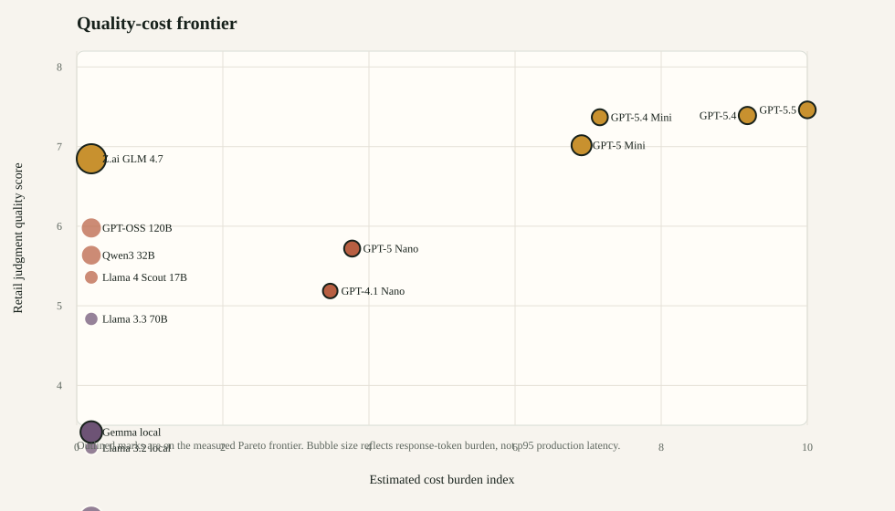
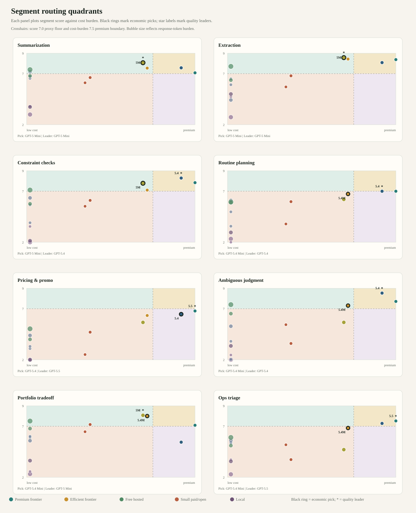
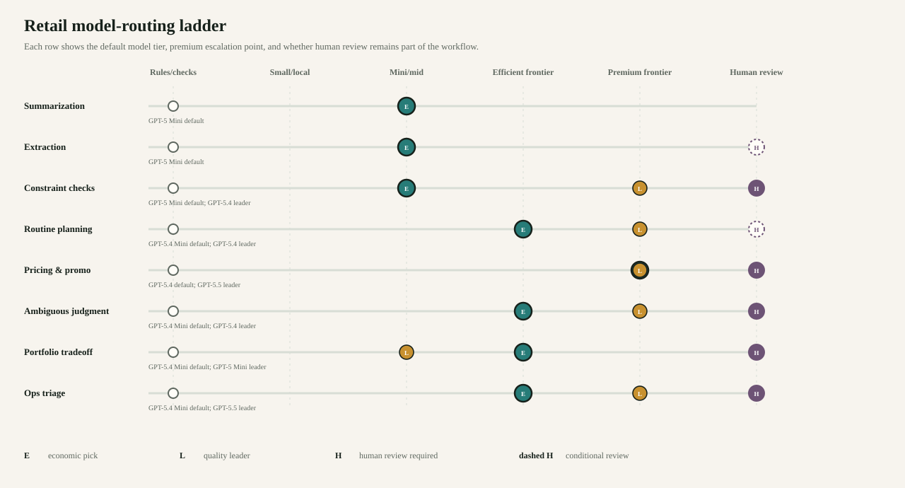
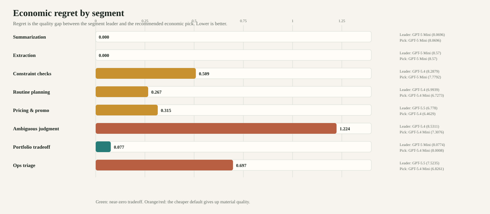
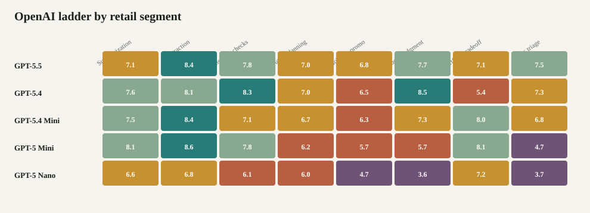

Premium frontier
GPT-5.5
7.4614/10
Overall quality leader in the 100-item run; best reserved for high-downside exceptions.
- Risk weighted
- 7.3718/10
- Artifact cost
- $1.3371
- Coverage
- 100/100
A visual and written routing guide for choosing the cheapest safe model tier across retail planning workflows.
Quality, cost, and response burden separate model clusters more usefully than a one-dimensional leaderboard.

Each retail workflow has its own routing geometry. Black rings identify economic picks; star markers identify quality leaders.

This translates model scores into the operating model: rules, small models, mini models, efficient frontier, premium escalation, and human review.

The regret chart shows how much quality is given up when the economic pick is cheaper than the quality leader.

The premium winner is not always the right economic choice. Retail MerchBench separates quality anchors from routing defaults.
Overall quality leader in the 100-item run; best reserved for high-downside exceptions.
Near-top overall quality and the strongest ambiguous-judgment/constraint-checking profile.
Near-frontier quality at materially lower observed artifact cost than the premium models.
Best cheap paid default for summarization, extraction, and portfolio triage in this run.
Strongest free hosted result; competitive with paid small models on several segments.
Strong open model and a good free-capacity comparator.
Retail task class changes the answer. The same model is not optimal for extraction, pricing, portfolio tradeoff, and operational triage.

Recommended quality leader, economic pick, and human-review boundary by segment.
| Segment | Quality Leader | Economic Pick | Default Route | Human Review |
|---|---|---|---|---|
| Summarization | GPT-5 Mini 8.0696/10 |
GPT-5 Mini 8.0696/10 |
GPT-5 Mini for paid production; GPT-OSS 120B when free hosted quota is available. | No, unless the summary becomes a decision recommendation or contains conflicting financial figures. |
| Extraction | GPT-5 Mini 8.57/10 |
GPT-5 Mini 8.57/10 |
Rules/schema first, GPT-5 Mini fallback for messy source text. | Only for material missing values or field conflicts. |
| Constraint checks | GPT-5.4 8.2879/10 |
GPT-5 Mini 7.7792/10 |
Deterministic checks first; GPT-5.4 for high-severity explanation, GPT-5 Mini for cheaper routine triage. | Required when a violated constraint is overridden. |
| Routine planning | GPT-5.4 6.9939/10 |
GPT-5.4 Mini 6.7273/10 |
GPT-5.4 Mini with deterministic guardrails; escalate low-confidence recommendations. | Only for high inventory value, low confidence, or irreversible actions. |
| Pricing & promo | GPT-5.5 6.778/10 |
GPT-5.4 6.4629/10 |
GPT-5.5 or GPT-5.4 with margin and vendor-funding controls; human review for material decisions. | Yes for material price moves, below-floor margin, or high competitive-response uncertainty. |
| Ambiguous judgment | GPT-5.4 8.5311/10 |
GPT-5.4 Mini 7.3076/10 |
GPT-5.4 for ambiguous judgment; GPT-5.4 Mini when the decision is reversible and well-guardrailed. | Recommended for vendor commitments, high markdown risk, or executive-pressure cases. |
| Portfolio tradeoff | GPT-5 Mini 8.0774/10 |
GPT-5.4 Mini 8.0008/10 |
GPT-5 Mini or GPT-5.4 Mini plus human review. | Yes. This should not be fully autonomous in the current evidence base. |
| Ops triage | GPT-5.5 7.5235/10 |
GPT-5.4 Mini 6.8261/10 |
GPT-5.4 Mini for normal exceptions; GPT-5.5 or human review for safety/customer-trust risk. | Yes when safety, legal, public commitment, or customer-trust exposure appears. |
Retail MerchBench is a routing-prior artifact, not a final human-validated benchmark ranking.